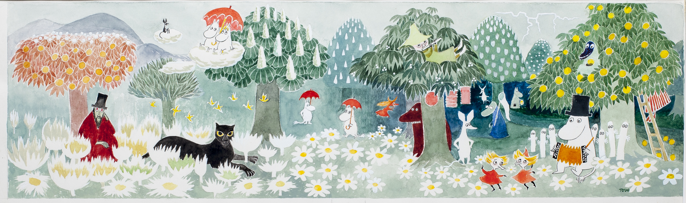

Etusivulle
Luonnontiede
Urheilu
Taide
Popkulttuuri
Historia
Tietoja
TAIDE
Kysymys 5/5

Picture: Jari Kuusenaho ©Moomin Characters
Kuka kuuluisa taiteilija loi Muumit?
A) H.C. Andersen
B) Claude Monet
C) Tove Jansson
D) Frida Kahlo
Lukitse vastaus
Lopeta
Carita Niskanen